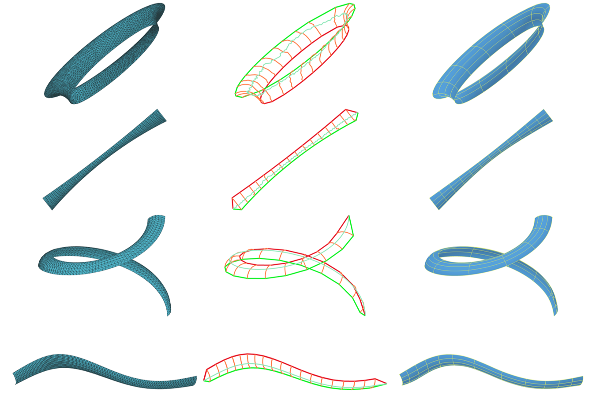
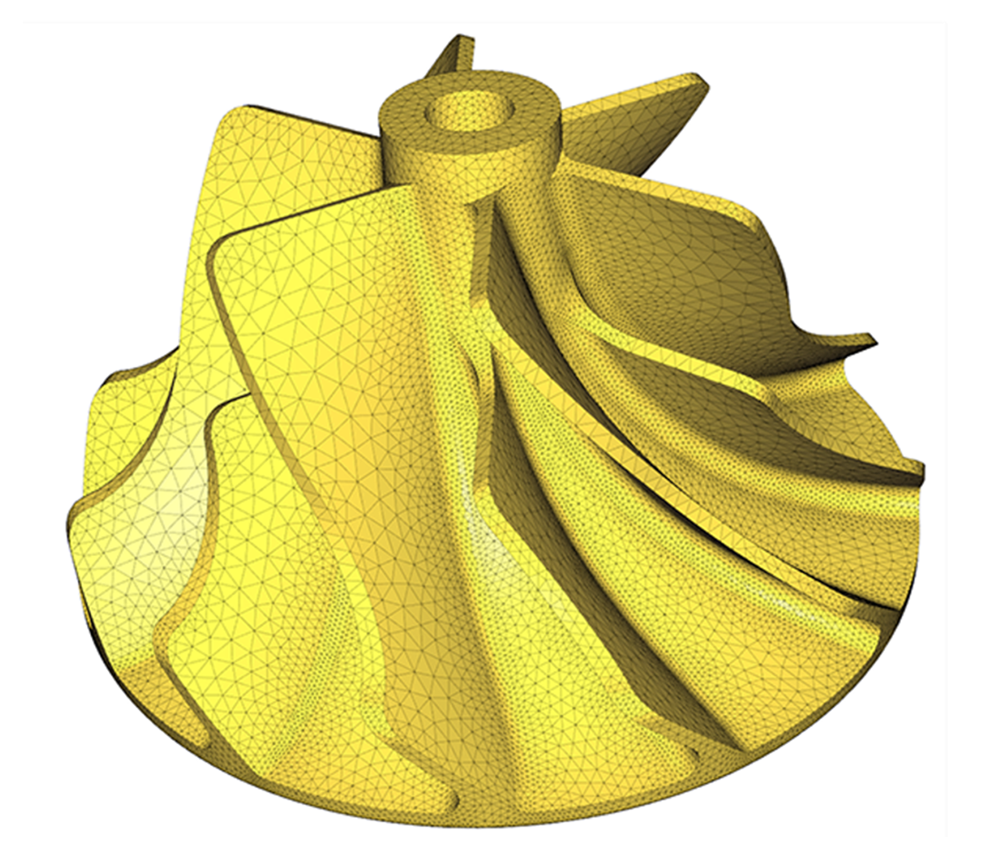
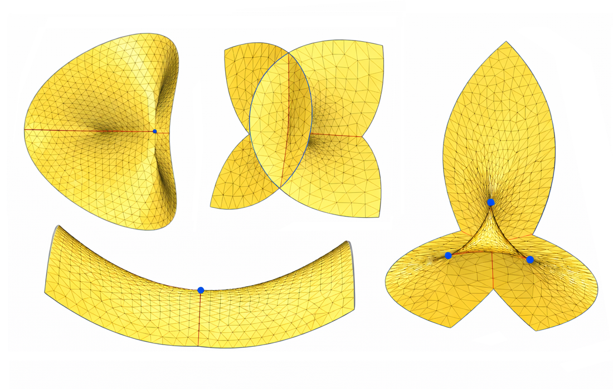
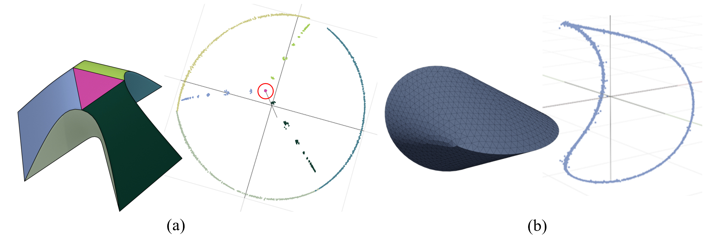
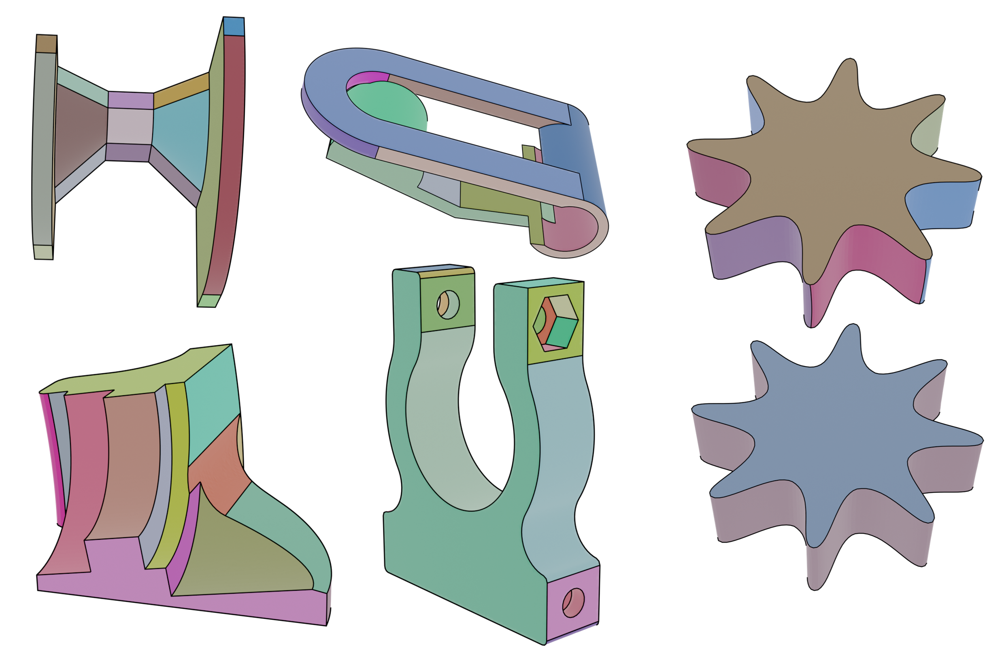

Biography
I am Zheng Zeng. I hold a Ph.D. and currently work as an engineer at the Academy of Mathematics and Systems Science, Chinese Academy of Sciences. My research interests include computer-aided design and computational geometry.
Publications
-

Skeleton-Based Reconstruction of Variable-Radius Rolling-Ball Blend Surfaces
Zhengrun Chen, Yingyu Yang, Zheng Zeng
Journal of Computer-Aided Design & Computer Graphics, accepted manuscript, 2026
-

Robust Elliptic Cylinder Fitting Using Unsupervised Probabilistic Clustering Analysis
Bochuan Liu, Mingyang Zhao, Zheng Zeng
Journal of Computer-Aided Design & Computer Graphics, accepted manuscript, 2026
-

Symmetry-Aware Interactive Quad Layout Generation
Xingyu Liu, Zheng Zeng, Sen Zhang, Xiaohong Jia
Journal of Computer-Aided Design & Computer Graphics, accepted manuscript, 2026
-

Recursive Automatic Sequence Assembly Based on Physics Simulation
Yu Du, Mingyang Zhao, Zheng Zeng, Jian Shi, Dongming Yan
Journal of Computer-Aided Design & Computer Graphics, accepted manuscript, 2025
-

Precision controllable mesh generation for boundary representation model
Zheng Zeng, Xiaohong Jia, Shiqing Xin, Dongming Yan
Journal of Zhejiang University (Engineering Science), vol. 58, no. 2, pp. 257–267, 2024
-

Mesh Generation for Self-Intersecting Rational Parametric Surfaces
Zheng Zeng, Xiaohong Jia, Mingyang Zhao, Shiqing Xin, Dongming Yan
Journal of Computer-Aided Design & Computer Graphics, vol. 35, no. 12, pp. 1920–1934, 2023
-

Developable mesh segmentation by detecting curve-like features on Gauss images
Zheng Zeng, Xiaohong Jia, Liyong Shen, Pengbo Bo
Computers & Graphics, vol. 109, pp. 42–54, 2022
-

Developable Surface Segmentation For CAD Models
Zheng Zeng, Xiaohong Jia, Liyong Shen, Pengbo Bo
ACM SIGGRAPH 2021 Posters